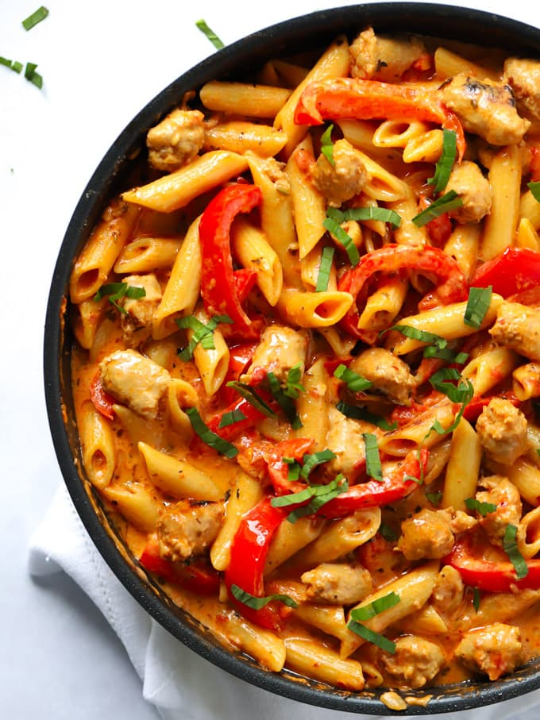

Sausage pasta


Sausage and pasta, what is there not to love
This quick and easy weeknight meal is one that the whole family will love,
and you will find yourself making again and again
For this recipe you will need the following.
Ingredients:
- Pasta of your choice
- White onion
- Garlic
- Bell pepper
- Spinach leaves
- Sun dried tomatoe pesto
- Cheese
Steps:
- First start by sweating down the onions and Garlic until translucent
- Add the bell pepper and cook down further
- Next add the spinach and the pesto and cook for a further 5 minutes
- During this time in a seperate pan cook the sausages fully on a medium to high heat
- Once the sausages are cooked cut into bit size chucks and add to the rest of the ingredients
- Lastly add lashings of your favourite Cheese and stir thoroughly
And there you have it, your new favourite pasta dish that I guarantee you will be making for years to come